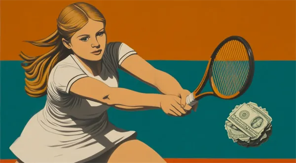

Napsala: Anet Jelínková
Datum: 5.5.2026
Být mladý, bohatý a nejlepší na světě. Pro miliony fanoušků je to definice snu, pro samotné sportovce se však tato rovnice stále častěji mění v noční můru. Případ tenistky Naomi Ósakaové nebo gymnastky Simone Bilesové nebyl jen krátkodobým výkyvem. Je to varovný signál, že sportovní průmysl drtí lidskou psychiku rychleji, než stačíme tleskat rekordům. Dnešní sportovec už není jen ,,atlet”. Je to firma, marketingový produkt a nonstop běžící kanál na sociálních sítích. Když Ósakaová před časem odmítala tiskové konference kvůli úzkostem, tenisový bafuňáři reagovali pokutami. Ukázali tím děsivou odtrženost od reality. Tlak na výkon už totiž dávno překročil hranice fyzických možností a přesunul se do hlavy, kde se prohrává nejbolestivěji. Argument, že ,,za ty peníze by to měli vydržet”, je v 21. století přežitkem. Peníze vám sice koupí nejlepšího fyzioterapeuta, ale nespraví serotonin v mozku. Pokud budeme na mladé talenty nahlížet jen jako na stroje na trofeje, dočkáme se generace šampionů, kteří sice budou mít plné vitríny, ale prázdné oči.Sport musí víc než kdy jindy investovat do psychické hygieny, jinak se jeho nejzářivější hvězdy vypálí dřív, než stačí dospět. Potlesk publika je návykový, ale nesmí být ohlušující natolik, aby přehlušil volání o pomoc. Sport bez duše je jen statistika.

Zdroje: Naomi Ósakaová a French Open (2021), Simone Biles a ,,Twisties” (LOH Tokio 2020/21), Studie o duševním zdraví elitních sportovců, Michael Phelps a dokument ,,The Weight of Gold”